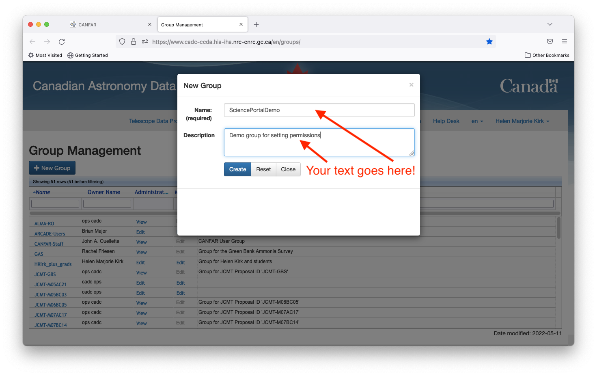
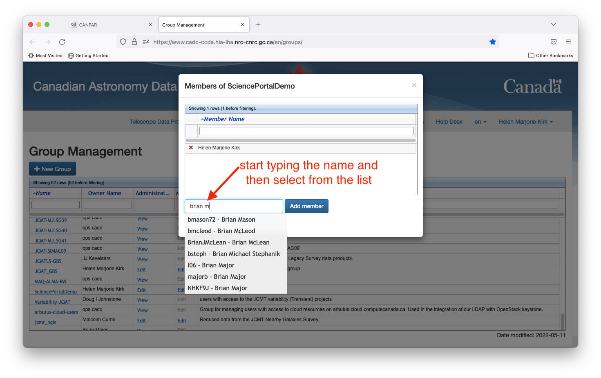

Group Management Tools¶
The group management tools allow you to define a set of people who have permission to read, write, or execute your files.
Start by going to canfar.net and clicking on the Group Management icon.

You can then create a new ‘group’ (list of CADC usernames) which you will be granting access to your files. Click on the ‘New Group’ button to get started.

A pop up window will appear that allows you to provide a group name and brief description.

This group will then appear on the master list on the main page. You can add your collaborators by clicking the ‘Edit’ button in the Membership column.

Start typing the name of your collaborator into the ‘Enter a name’ box, and a window will pop up with matches that you can use to find the person. (NB: the search is based on the actual name and not CADC username). Once you have selected the person, click the ‘Add member’ button. They will be added to the group even though the listing on the pop-up window is not auto-refreshed. You can close the pop-up window and click the ‘Edit’ button a second time to confirm that they are now a member of your group.

If you wish to grant others in the group permission to add further members, etc, you can do so by clicking the ‘Edit’ button in the ‘Administrators’ column and following the same procedure.

With your group created, you navigate to CANFAR’s webpage for all projects,
https://www.canfar.net/storage/arc/list/projects and edit file access there.
In this example, the project directory is ALMAcores, and the group
HKirk_plus_grads is already granted access to read and write files.

Click the pencil button to edit the group permissions. In this example, the current group with write permissions appears in the associated box.

Start typing in your desired group name, then select the group from the pop-up list.

Click the ‘Save’ button

then click ‘Ok’ on the pop-up window.

Your updated group permissions are now shown on the main page.

Management of groups can also be done via the command line, and is the prefered option for more complex settings. See this page for instructions.